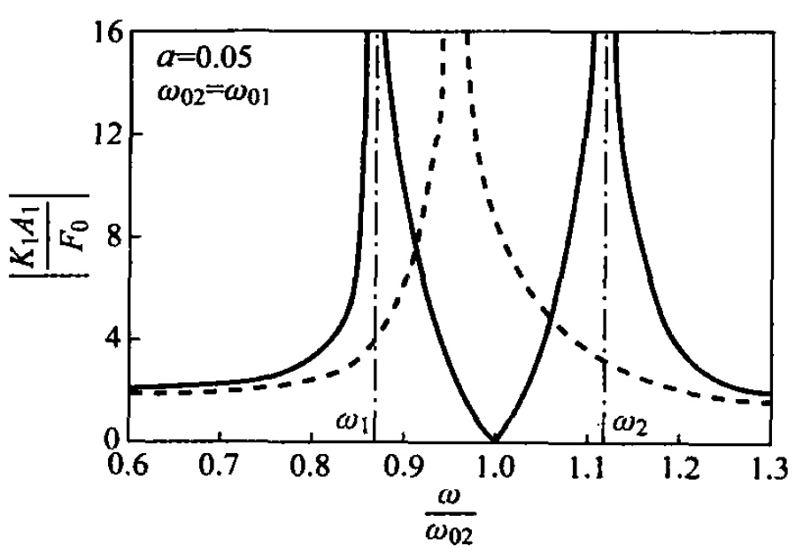

2.5. 动力吸振器的基本原理#
某机器及其安装系统由 \(M_1\) 和 \(K_1\) 的单自由度系统作为其简化模型。如果在机器运转时，由于不平衡力 \(F_0\sin\omega t\) 的作用，当激励频率 \(\omega\) 接近系统固有频率时，主从系统便发生共振。如果该系统的参数以及机器运转速度都无法改变时，则可在此主系统上附加一个 \(K_2\)-\(M_2\) 的从系统，适当选取从系统的质量和刚度，可以使主系统的振动大为减小，而附加的从系统却振动起来，就好像将主系统的振动能量都通过从系统吸收掉一样，这种附加的质量-弹簧系统便称为动力吸振器。其构成系统见Fig. 2.12，只需在 \(M_1\) 上加上作用力 \(F_0\sin\omega t\) 即可。
取重力作用下的静平衡位置为坐标原点，其运动方程式为：
设其稳态响应为
由此得到
由式(2.62)可见，当 \(\omega^2=\frac{K_2}{M_2}\) 时，主系统质量的振幅 \(A_1\) 为零，也就是说，只要动力吸振器本身的固有频率等于激励频率时，就可以消除主系统质量的振动。此时，从系统质量的振幅
因此，从系统通过弹簧 \(K_2\) 将一个大小与作用力 \(F_0\) 相等，而方向却反向的作用力加到主质量 \(M_1\) 上，正好与主系统上的激励力相抵消，从而消除主系统的振动，这便是动力吸振器的消振机理。
Fig. 2.13是对某个特定的主从系统动力响应的频响特性，其从系统与主系统的质量比 \(a=0.05\)，且 \(\omega_{02}=\omega_{01}\)。图中横坐标为激励频率与吸振器（即从系统）的固有频率之比 \(\omega/\omega_{02}\)，纵坐标表示主系统振幅与激励引起主质量的静伸长之比，即 \(A_1/(F_0/K_1)\)。
{kind=link}

Fig. 2.13 动力吸振器的频响特性#
由图中可以看出，当 \(\omega=\omega_{02}\) 时，\(A_1=0\)，即主系统不振动。图中实线表示有吸振器的两自由度系统的频率响应曲线，虚线表示无吸振器的主系统本身的幅频响应曲线。显然，附加吸振器后，系统出现两个新的共振频率 \(\omega_{\mathrm{n}1}\) 与 \(\omega_{\mathrm{n}2}\)（由式(2.129)确定）。因此，当激励频率 \(\omega\) 等于 \(\omega_{\mathrm{n}1}\) 或 \(\omega_{\mathrm{n}2}\) 时，系统将产生新的共振。为了消除主系统的振动，同时又不要产生新的共振，使主系统能够安全地工作在远离新的共振点的频率范围内，两个固有频率 \(\omega_{\mathrm{n}1}\) 与 \(\omega_{\mathrm{n}2}\) 以相距较远为好，为此需要适当选取 \(a\) 值来实现。但若该吸振器质量与主系统质量之比过小时，为了吸收主系统的共振能量，吸振器质量的振幅 \(A_2\) 将是一个较大值。这样，吸振器的弹簧刚度与运动位置必须满足该条件，在吸振器设计时，还需注意这一方面问题。
在此，我们再引入“反共振”的概念。主从系统中对于主系统的质量 \(M_1\) 施加简谐激振力，在某个频率点——反共振频率点上，主系统虽然受到激励但是却保持不动，这就是“反共振”的现象。实际上，从力平衡的角度分析，因为该“反共振频率”等于从系统的固有频率，由于从系统 \(M_2\) 共振运动的惯性力通过弹簧作用在 \(M_1\) 上，抵消了外界的激振力从而达到平衡，好像主系统没有受激励一样处于静止状态。设计动力吸振的原理也就是利用反共振来实现。这个原理可以引申到连续系统，对于连续系统出现的反共振现象，同样是由于惯性力和外界激振力平衡的结果，解释的道理是一样的，但是，在做试验的时候，响应信号信噪比可能很差。
2.5.1. 交互探索：动力吸振器扫频与反共振实验台#
下方交互探索把主系统频率记为 \(\omega_{01}=1\)，并用质量比 \(a=M_2/M_1\)、调谐比 \(\omega_{02}/\omega_{01}\) 与扫频比 \(\omega/\omega_{01}\) 来控制动力吸振器。拖动参数后，可以同时观察主系统频响曲线、无吸振器时的原始共振曲线，以及当前频率下主质量与吸振器质量的稳态运动。